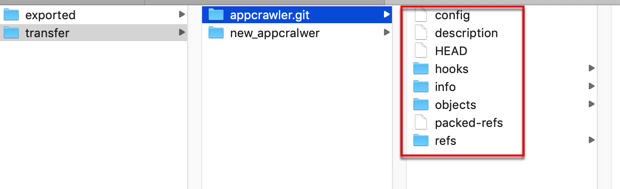

迁移仓库且保留历史记录
之前遇到过个需求：整体迁移git仓库，且保留所有历史commit提交记录
步骤是：
git clone --mirror old-repo-url new-repo
cd new-repo
git remote remove origin
git remote add origin new-repo-url
git push --all
git push --tags
说明：
此处的：
git clone --mirror <url to ORI repo> temp-dir
等价于：
git clone <url to ORI repo> temp-dir
git branch -a
git checkout branch-name
git fetch --tags
git tag
git branch -a
后记：确认和验证新仓库代码是正常的
cd ..
rm -rf new-repo
git clone new-repo-url new-repo
其中：把new-repo-url和 new-repo 换成你自己的仓库
举例：迁移appcrawler
此处自己的操作：
以镜像方式下载复制代码
git clone --mirror http://xxx.xxx.com:yyy/data/data_limao/appcrawler.git appcrawler
下载后是git相关文件，而不是源码
此处下载后，本地文件夹中看到的内容，不是源码，而是git的一些文件：
cd appcrawler.git
limao@xxx ~/dev/xxx/gitlab/transfer/appcrawler.git master ll
total 32
-rw-r--r-- 1 limao CORP\Domain Users 23B 7 15 15:23 HEAD
-rw-r--r-- 1 limao CORP\Domain Users 238B 7 15 15:23 config
-rw-r--r-- 1 limao CORP\Domain Users 73B 7 15 15:23 description
drwxr-xr-x 13 limao CORP\Domain Users 416B 7 15 15:23 hooks
drwxr-xr-x 3 limao CORP\Domain Users 96B 7 15 15:23 info
drwxr-xr-x 4 limao CORP\Domain Users 128B 7 15 15:23 objects
-rw-r--r-- 1 limao CORP\Domain Users 105B 7 15 15:23 packed-refs
drwxr-xr-x 4 limao CORP\Domain Users 128B 7 15 15:23 refs

-> 不要和我之前一样误以为是操作失败了。这是正常的，期望的结果，不是出错了。
删除本地的远端的分支
cd appcrawler
git remote remove origin
其中会有提示，意思好像是需要你主动删除原有分支？总之可以忽略不管。
注：
git remote remove origin
的另一种写法：
git remote rm origin
添加远端地址为新仓库
git remote add origin http://xxx.corp.com:xxx/data_limao/appcrawler.git
提交上传所有代码和标签
- 上传所有代码：
git push --all- 或
- 先
git push origin --all - 和 所有标签：
git push --tags
- 先
- 或